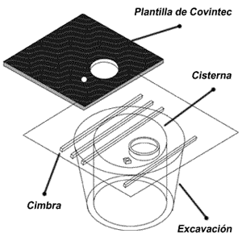
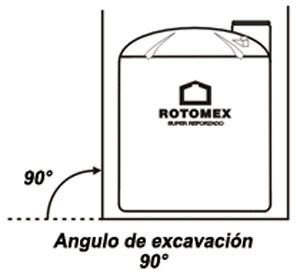
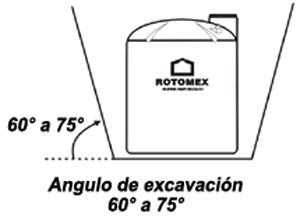
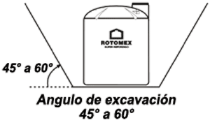

ROTOMEX®
Cisternas con capacidad desde 1,100 hasta 5,000 litros
Teléfonos: (55) 5824-1025, (55) 5824-1018 y (55) 5824-1414 e-mail: ventas@rotomex.com

Las cisternas ROTOMEX® están fabricadas con resina de polietileno de la más alta calidad aprobado por la FDA adecuado para el manejo de alimentos y almacenamiento de agua por no producir olor ni sabor.
Dimensiones y Capacidades:
| Modelo |
Capacidad en litros |
Dimensiones en centímetros |
|
|---|---|---|---|
| Diámetro | Altura | ||
| CVA-1100 | 1,100 | 112 | 132 |
| CVA-2500 | 2,500 | 152 | 163 |
| CVA-5000 | 5,000 | 185 | 220 |
Características:
- Moldeados rotacionalmente en un pieza sin costuras
- Exterior en color azul claro
- Interior totalmente liso lo que evita que se adhiera suciedad a las paredes
- Práctica tapa roscada de 55 cm. de diámetro
- Indicador de líquidos visible
- Temperatura máxima de almacenamiento 63 grados centigrados
- Perforación de 19 mm en el cuello para instalación del tubo alimentador
- Conexión roscada de 1 1/2 pulgadas para linea de salida ubicada en la parte superior
Instalación (pasos a seguir):
- Sugerimos que la excavación cilindrica sea 40 cm. más amplia que el diámetro en la parte superior de la cisterna y 20 cm. más amplio que el diámetro inferior
- En el fondo de la excavación hacer un firme de concreto aplanado reforzado con malla electro soldada, de 5 cm. para cisternas de 2500 lt. y de 8 cm. para cisternas de 5000 lt
- Repellar las paredes con mezcla
- Antes de colar la loza de concreto se instalan las tuberías y se recomienda apuntalar la cisterna para evitar que el peso del concreto la deforme
- Asegúrese de que la superficie de apoyo se encuentre perfectamente limpia antes de colocar la cisterna
- No se debe colocar la bomba sobre el tanque
- No se recomienda dejar la cisterna con menos de 30% de agua
- Revisar que la tapa lleve respiradero
- Nota: No se recomienda este tipo de construcción cuando exista paso de vehículos
- Cuando existen niveles freáticos más altos que la profundidad de la base de la cisterna, se recomienda evitar que el nivel del agua sea menor que el agua freática para evitar presiones sobre la cisterna o la loza
Principales tipos de suelo:
Suelo duro o rocoso (Excavación tipo "A") Es aquel que en la excavación resulta muy dificil ya que está el suelo muy compactado. En este caso se utilizará la excavación tipo "A".
Suelo de resistencia media (Excavación tipo "B") Es aquel que no presenta hundimientos fácilmente. En este caso habrá que realizar una excavación cilíndrica como lo muestra la figura.
Suelo blando (Excavación tipo "C") Este suelo presenta una gran inestabilidad ante una fuerte carga de peso y no cuenta con resistencia a la excavación, como arenas o suelos con corrientes subterráneas, en este caso se recomienda hacer una excavación de tipo "C".
Recomendaciones:
- Revise su tanque al momento de la entrega
- No ruede su tanque sobre las conexiones y mantenga el área libre de objetos punzocortantes
- Apóyelo totalmente sobre una superficie de concreto
- Instálese en un lugar de fácil acceso, para que su mantenimiento o remoción no tenga problemas
- Los tanques deben probarse por un mínimo de 5 horas
- Las conexiones son diseñadas para ser apretadas manualmente, el forzamiento puede romperlas
- No se cargue ningún peso sobre las conexiones, soporte totalmente las tuberías y válvulas
- Usense juntas de expansión para evitar el daño de las conexiones
- Las capacidades y los espesores son nominales y aproximados, los tanques de polietileno tienen cierto grado de expansión de acuerdo al espesor de pared, temperatura y gravedad específica
Francisco Barrera 11B, Col. Cristóbal Higuera, Atizapán de Zaragoza, C.P. 52400, Estado de México
Teléfonos: (55) 5824-1025, (55) 5824-1018 y (55) 5824-1414 e-mail: ventas@rotomex.com
Horario atención: LU-VI 9:00 AM a 5:45 PM